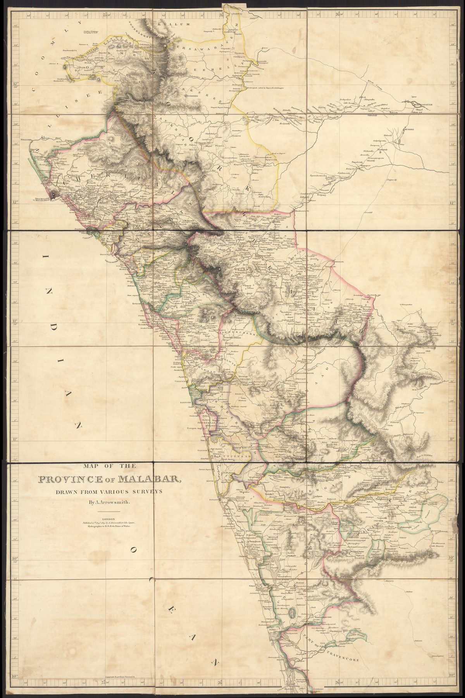

A separately issued map
Arrowsmith published this large, separately issued map in 1809 rather than as an ordinary atlas plate. The three sheets bring together recent military and regional surveys of the Company’s Malabar province, covering much of northern present-day Kerala at a density previously unavailable in print.
Conquest, resistance and survey
The province had been assembled after the Anglo-Mysore wars and remained a site of resistance to Company rule. Roads, settlements, rivers, passes and administrative divisions therefore had immediate practical value. The map served the army and civil service and later supplied material for Arrowsmith’s general map of India.
Compilation and hidden labour
‘Drawn from various surveys’ is both a claim of authority and an admission of collective production. The finished sheet carries Arrowsmith’s name, but its information was generated by officers, survey parties, guides, local officials and informants working across the region.
The gaze
Separate issue is itself a signal. A map of one province, at this scale and sold on its own, had a particular buyer in mind: the officer or collector who needed the passes and taluks of Malabar rather than a view of India. Its generality is that of the survey grid, which renders roads, rivers and divisions in the same notation whatever the administration intends to do with them.
In Basalt and Laterite